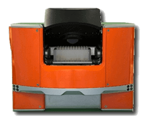

HiG™ 3 and 4 AUTOMATED CENTRIFUGE
The Highest Speed Robot-Accessible Centrifuge On The Market

Compact, versatile, highly accessible design
The BioNex HiG centrifuge (patent pending) delivers the highest speed of any robot accessible centrifuge on the market today. Capable of rapid acceleration up to 5000 x g, the HiG provides better pelletizing, cleaner supernatants and faster filtration than lower speed centrifuges can achieve. Applications requiring previously unobtainable spin forces are now possible in an automated centrifuge.
Faster Filtration, Temperature Control
The dual position rotor design accepts payloads up to 350 grams per bucket, allowing most microplate configurations to be processed easily, including deep well blocks and filterplate assemblies. Its imbalance tolerance of up to 100 grams is more forgiving of payload weight differences, promoting continual, uninterrupted operation, and provides vibrational stability for other instruments operating on the same platform. The large door opening allows buckets to be accessed directly by a wide range of laboratory robots without an intermediate plate loader, reducing the number of steps required and overall cycle time.
Key Features and Benefits
- High speed: Up to 5000 x g
- Imbalance tolerance: Up to 100 gram weight difference between buckets
- Low vibration: Does not interfere with nearby instruments
- Fast: Acceleration/deceleration in 20 seconds
- Flexible: Accepts microplates and assemblies up to 61 mm in height
- User programmable: Create spin profiles to optimize any application
- Compact: Small footprint, stackable
- Directly accessible: No plate drop required
- Self-monitoring: Internal measurements validate instrument conditions
Typical Applications
- Bubble removal
- Sample preparation
- Pelletizing cells and cellular debris
- PCR protocols
- DNA purification and sequencing
- Filtration assays
General Specifications
- Dimensions: 11.47" H x 15.75" W x 21.65" D
- Weight: 170 pounds
- Capacity: 2-bucket rotor
- Maximum plate height: 61 mm
- Maximum gripper opening::169 mm
- Electrical: 100–240 VAC, 50/60 Hz, 15 A